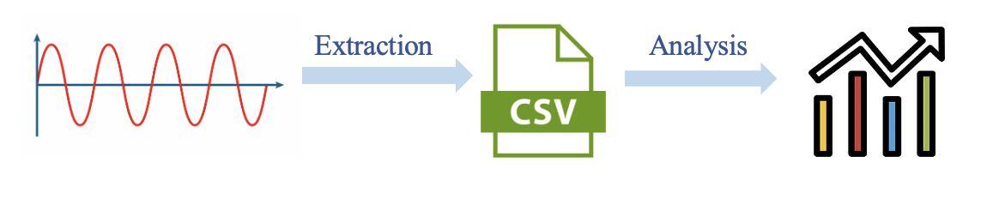

The EKG Digitization project was a critical step in developing a Convolutional Neural Network (CNN) capable of predicting cardiac MRI results from EKG data. This effort was part of a larger initiative to make advanced cardiac diagnostics more accessible, especially for children with Tetralogy of Fallot, by leveraging existing technology from IBM, which already has a CNN that can predict cardiac MRIs from digitized EKGs. Given that cardiac MRIs are expensive, challenging to schedule, and often require sedation for pediatric patients, being able to obtain comparable diagnostic information from an easily administered and cost-effective EKG is a significant advancement.
The initial task in this project was to digitize the PDF patient EKGs to train a new CNN specifically for Tetralogy of Fallot patients. This digitization process was crucial to begin training the model and ensure it could accurately predict the cardiac MRI results. A comprehensive review of existing methods for EKG digitization was conducted to understand the current state of the field and identify the best approaches.

1. Loading EKG PDF Image: The EKG PDF image was converted to grayscale to simplify the processing and enhance the clarity of the signal.
2. Binary Thresholding: Applied binary thresholding to isolate and remove gridlines from the EKG images, which was essential for clear signal extraction.
3. Preprocessing:
-Gaussian Blurring and Median Filtering: These techniques were used to reduce noise in the images, ensuring that the important features of the EKG signal were preserved.
-Adaptive Thresholding: This method enhanced the EKG signal by adjusting the threshold dynamically, which helped in clearly distinguishing the EKG signal from the background.
4. Signal Extraction:
-Creating Min and Max Lines: Defined the boundaries of the EKG signal by identifying the minimum and maximum points in the signal.
-Filling Pixels: Filled in every pixel between these lines to ensure the digitized version accurately reflected the original signal's peaks and valleys.
5. Scaling Adjustment:
-Standardizing Y-Coordinates:Adjusted the y-coordinates to match the original image, ensuring that the height of the signal was accurately represented.
-Aspect Ratio Maintenance: Ensured the final digitized signal maintained the same aspect ratio as the original image, preserving the true shape of the EKG waveform.
6. Verification: Plotted the digitized signal independently and overlaid it with the original image for verification. This step ensured that the digitized EKG signal accurately matched the original signal, confirming the precision of the digitization process.
Throughout the project, various technical challenges were addressed, such as preprocessing difficulties, mapping accuracy, and scaling problems. Initially, preprocessing EKG images to enhance the signal without losing important details posed a challenge. The algorithm was adjusted to create min and max lines and filled in every pixel for the x-coordinate to ensure the digitized version accurately reflected the original signal's peaks and valleys. Additionally, the scaling was adjusted to maintain the original image's aspect ratio, ensuring an accurate representation.
The outcome of this project was the successful development of an algorithm that could digitize EKG signals accurately, enabling these signals to be used for further analysis and application in predicting cardiac MRI results. This effort significantly contributes to enhancing cardiac diagnostics by making it possible to infer information typically obtained from MRIs using more accessible and cost-effective EKG data. The digitized EKGs will now be used to train a CNN for Tetralogy of Fallot patients, potentially transforming how cardiac diagnostics are performed for this condition.
The Sickbay Data Extraction project aimed to streamline the process of extracting and analyzing waveform data to predict Low Cardiac Output Syndrome (LCOS) in children with congenital heart disease (CHD). LCOS is a critical condition where the heart cannot pump sufficient blood, leading to low oxygen levels and potentially fatal outcomes. The challenge lies in real-time detection due to the absence of direct measurement methods. The overall goal was to develop an efficient way to collect, process, and analyze waveform data from wearable sensors using Sickbay's system, and train a multi-modality neural network to detect impending LCOS events hours before they occur, allowing timely medical intervention. 
API Integration for Efficiency: Leveraging Sickbay's Python API was a game-changer. It allowed for efficient data fetching by connecting to the API, sending requests, and handling responses to retrieve the necessary waveform data.
Parallel Processing: Implementing threading using the ThreadPoolExecutor drastically cut down the processing time. Originally, it took approximately 2 hours to extract just 10 minutes of data for one patient. With parallel data extraction, this time was significantly reduced, addressing the initial inefficiency.
Standardized Data Frames: Creating time-indexed Data Frames using pandas was essential for maintaining consistency across the dataset. This standardization facilitated easier and more reliable analysis of the waveform data.
Robust Waveform Analysis: Developing algorithms to identify common waveforms among patients and determine the missing ones was crucial. Establishing consistent timing for data collection ensured that useful and accurate data was gathered, even when some waveforms were incomplete or cut short.
Comprehensive Data Collection: Beyond waveforms, extracting additional data such as medical records, bed information, and alerts provided a holistic dataset for analysis. This comprehensive approach helped in correlating waveform data with other clinical parameters.
The outcome of this project was the successful development of an efficient data extraction and preprocessing system. By leveraging Sickbay's Python API and implementing concurrent processing techniques, the project significantly improved the efficiency and accuracy of data extraction. The comprehensive dataset obtained through this process is now ready for further analysis to predict LCOS, potentially transforming how real-time monitoring and intervention are performed for children with congenital heart disease. This effort aims to utilize the multi-modality neural network to predict LCOS events hours before they happen, allowing medical professionals to take preemptive actions to mitigate the risks and improve patient outcomes.
From 2018 to 2020, I worked with Embrace Relief to begin the Just A Drop Project, aiming to raise $4,500 to build a water well to provide over 2,000 Nigerian families access to clean water. Inspired by my mom, who donated her first paycheck to building a well in Africa, I decided to follow in her footsteps and pursue a similar goal. I was committed to involving the community in this effort and reached out to local businesses to gain their support. This local initiative not only helped raise funds but also brought significant media attention to our cause.
To raise awareness and funds, I organized various initiatives such as gift card raffles at school and dine-to-donate events. My efforts extended beyond fundraising; I actively reached out to local media outlets to spread the word about our project. I conducted interviews with editors from The Morning Journal, Cleveland.com, and Embrace Relief, which led to features in their publications. Our project was also highlighted in the March 31st edition of the local newspaper.
The media traction didn't stop there. I had the opportunity to appear on WKYC's, where I discussed the water well initiative, raising further awareness about our situational privilege and the transformative impact of providing clean water to those in need. Additionally, I spoke at an online FKM Seminar, where I shared insights about our project and its significance.
My goal was not only to raise funds but also to educate our community about how something we often take for granted, like access to clean water, can drastically change lives across the sea. Through these efforts, I aimed to foster a sense of global responsibility and empathy within our community.
I developed a Python script utilizing the simplemaps.com API to calculate distances using the Haversine formula. The script helped identify Maiduguri as the optimal location for the well by comparing the distances between every well and city in Nigeria.
Initially, the script used a brute-force approach with nested loops, which was computationally intensive. In hindsight, I would optimize it using Dijkstra's algorithm for shortest paths and spatial indexing techniques such as k-d trees to reduce the number of comparisons. Additionally, I would implement parallel processing to further enhance efficiency, ensuring a more scalable and efficient solution.
Thanks to Avon's eager involvement, we were able to raise $4,500 three months earlier than anticipated and build the Gulnur Avon Well in Maiduguri, Nigeria. I am immensely grateful for the community of Avon stepping up and supporting this cause. Together, we achieved a tangible difference in the lives of over 2,000 families, demonstrating the power of collective effort and compassion.
The Fight for Sight Project aimed to raise $2,500 to restore the vision of 25 individuals in Africa by providing them with cataract surgery. This project was born out of my personal experiences and the realization of the significant medical privilege I hold. After undergoing eight retinal surgeries myself, I became acutely aware of how fortunate I am to have access to advanced medical care. This awareness spurred me to take action and give back to those less fortunate.
Recognizing the financial, medical, and situational privilege that my friends, family, and I enjoy, I chose to conduct this project in a more private manner. Instead of seeking widespread public attention, I focused on mobilizing my immediate community. Through personal appeals and one-on-one conversations, I was able to gather the necessary support and raise the funds needed for this cause.

The $2,500 raised through these efforts allowed 25 individuals in Africa to receive cataract surgery, significantly improving their quality of life. This project not only provided a tangible impact on these individuals' lives but also fostered a deeper sense of gratitude and responsibility within my community. The Fight for Sight Project stands as a testament to the power of empathy and the importance of using one's privileges to make a positive difference in the world.